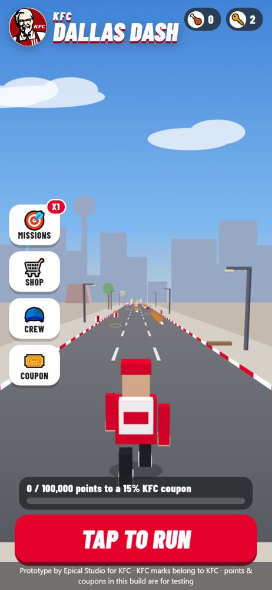
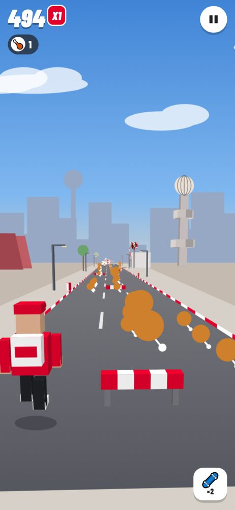
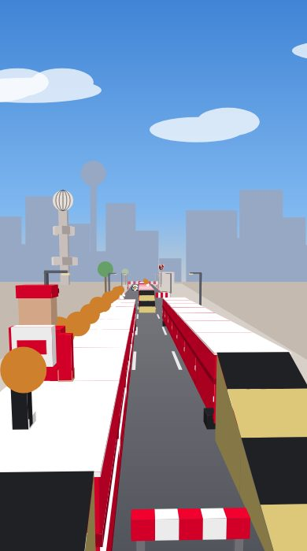
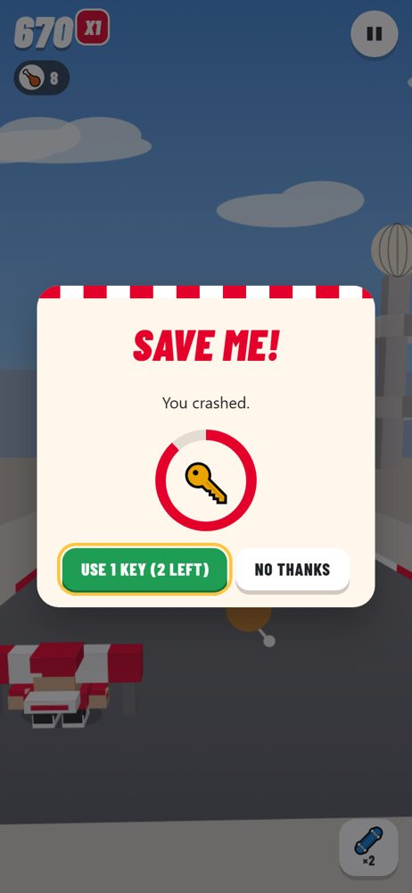
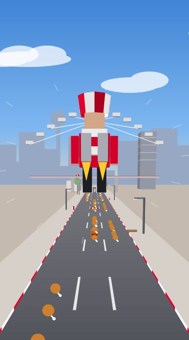
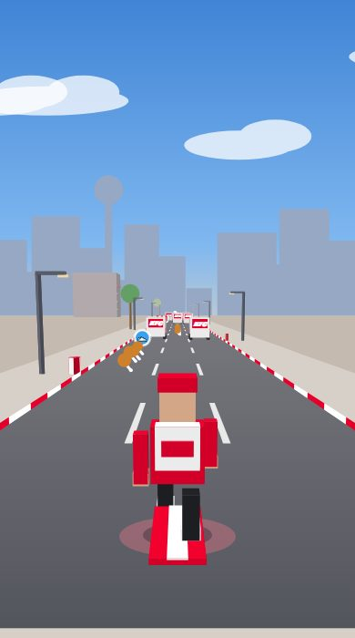
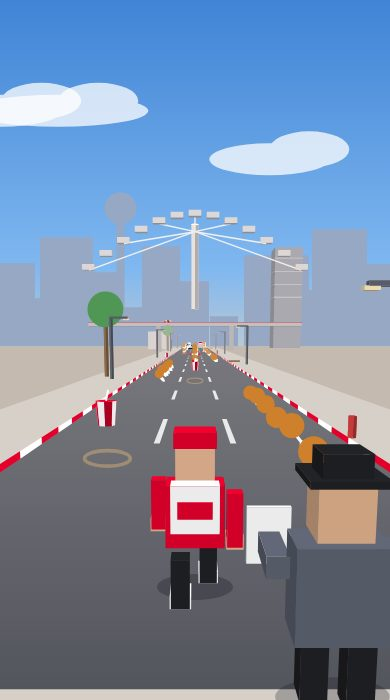
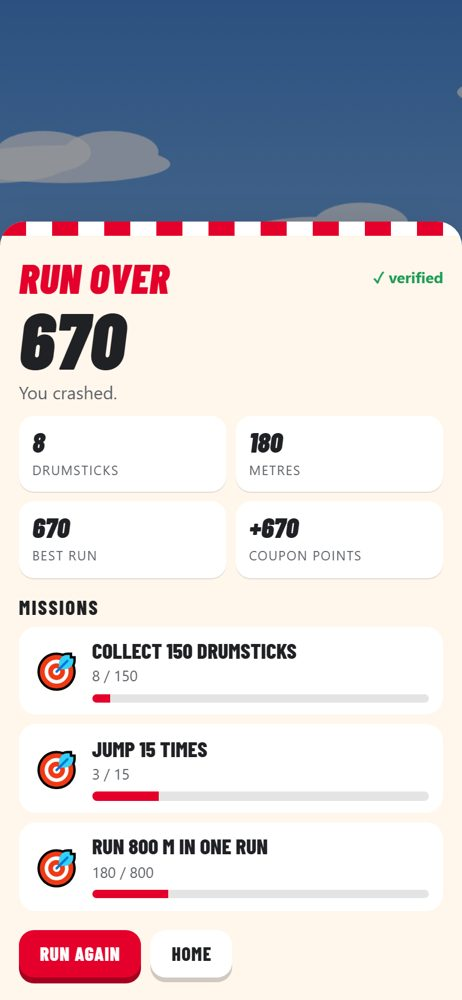
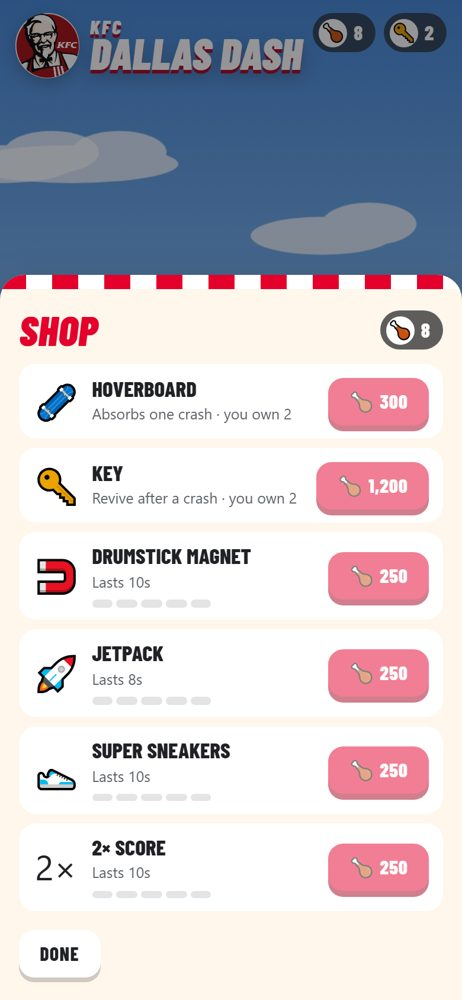
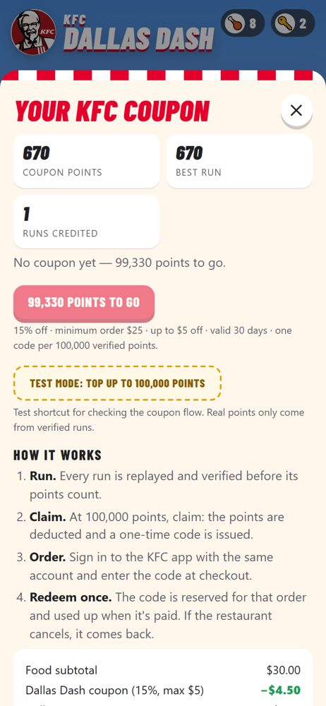

How a coupon earned in the game becomes a discount in the KFC ordering app with one database, single use, and a unique code every time. What we rebuilt in the game after studying Subway Surfers, and the step-by-step route to iOS and Android with React Native, Expo and EAS from a Windows PC.




| Area | What changed | Status |
|---|---|---|
| Coupon backend | A coupon service with its Postgres schema: issue, validate, reserve, redeem, release, restore and expiry. Codes are random, single-use, owner-bound and stored hashed and encrypted. 7 automated tests run against a real Postgres engine, including two checkouts racing for the same code. | built & tested |
| Game mechanics | The run is now endless and faster: speed climbs from 20 to 46 (it was 14 to 30) and the run no longer stops at 44 seconds. New: rideable trailers with ramps, oncoming vans, stumble and the inspector chase, hoverboard, 4 power-ups with 5 upgrade levels, keys to revive, a drumstick currency, a shop, and missions that raise a score multiplier. | built & tested |
| UI / UX | Subway-Surfers-style flow: a tap-to-run home screen, side menu (Missions, Shop, Crew, Coupon), a minimal in-run HUD with power-up timers, a "Save me!" revive prompt with a countdown, and results with mission progress. Swipes fire mid-gesture, double-tap uses the hoverboard, and the screen shakes and vibrates on hits. | built |
| KFC branding | KFC red #E4002B with red-and-white bucket stripes, the Colonel logo on the home screen and on the rotating bucket sign, KFC wordmarks on stores, vans and trailers, menu pickups (Original Recipe Bucket, Famous Bowl, Chicken Sandwich and more) and a KFC crew uniform. Page set to noindex. | swap in brand kit |
| Anti-cheat core | The simulation is now a single shared module. The server replays the same file the phone draws with, so the two can't drift apart. A lookahead bot checks that every course can be beaten. | built & tested |
| Mobile apps | The pathway and stack choice are in section 4. The game logic files carry over to React Native unchanged. | plan |
validate/reserve, and the payment and cancellation events need to call redeem/release/restore. We need to know who owns the ordering backend.One Postgres database (for example Neon, provisioned through the Vercel Marketplace) with two schemas and one owner each. The game API writes game.*: accounts, verified runs and the points ledger. The coupon service writes rewards.*: coupons and their event history. The KFC ordering app never touches the tables. It calls the coupon service. One writer per table is what makes "a code works once" a guarantee rather than a hope.
sim.js with the account's own loadout from the database (multiplier, boards, keys, upgrade levels), and credits only the score the replay produces. A changed score, a reused run_id or more than 6,000 inputs is rejected.game.point_ledger (+run, −coupon, +refund), so every balance can be audited back to the runs that earned it.SELECT … FOR UPDATE). You can never lose points without getting a coupon, or get a coupon without paying the points.issueKey. A double-tap or a network retry returns the same coupon instead of minting two (tested).KFC-7K4Q-9M2P-XW3R-H is 12 symbols from a cryptographic random generator (60 bits, about 1.15 × 1018 possible codes) plus one check symbol. The alphabet drops I, O, 0 and 1. The code is not computed from the user ID or a counter, so no one can predict the next code. The database's UNIQUE index is the final guarantee: on the (practically impossible) clash, the service mints again.| Step | What the service checks |
|---|---|
Cart previewvalidate | The code is well-formed (check symbol). It exists and belongs to this signed-in user: someone else's code gets the same "not found" answer as a fake one, so the endpoint can't be used to fish for valid codes. It is active and not expired, and the subtotal meets the minimum. Returns the discount, 15% capped at $5 ($30 → −$4.50). Writes nothing. |
Place orderreserve | Repeats every check, then locks the code to the order with one conditional update (… WHERE status='active'). If two checkouts race for the same code, exactly one wins (tested). Retrying the same order returns the same answer. A partial unique index allows only one game coupon per order. |
Payment capturedredeem | Called by the order/payment service, not by the phone. Marks the coupon spent and records the discount taken. A webhook delivered twice is harmless. |
Payment failedrelease | Unlocks the code so it can be used again. A cron sweep also frees reservations older than 30 minutes, and expires old codes. |
Restaurant cancelsrestore | The coupon comes back with its original expiry, or a 7-day grace period if that date has passed. |
| Risk | Control |
|---|---|
| Fake or inflated scores | Server replay of the input log; the server issues seeds; run IDs are unique; the input count is capped. next Plausibility checks (inputs per second, superhuman reaction patterns) and a daily points cap. |
| Bots and modified apps | next Apple App Attest / Google Play Integrity tokens on run submission. Also flag accounts whose scores jump sharply. |
| Farming many accounts | Coupons are bound to the account the KFC app signs in with. next Verify a phone number before the first claim, and limit coupons per payment card per month. |
| Guessing or sharing codes | 60-bit random codes; owner-bound; 10 wrong codes in 15 minutes locks code entry; codes are stored hashed. |
| Double spending | Conditional state transitions, one game coupon per order, and only the order service can redeem. |
| Insider / support | coupon_events logs every change; support works from the last 4 characters; a void status kills a code. |
POST /coupons/issue game app { issueKey } → { code, percent, expiresAt, … }
GET /coupons game + app → my coupons
POST /coupons/validate KFC app { code, subtotalCents } → { discountCents } | 400/404/410/422/429
POST /coupons/reserve KFC app { code, orderId, subtotalCents } → { discountCents } | 409 in_use
POST /coupons/redeem order svc { orderId } payment captured
POST /coupons/release order svc { orderId } payment failed / abandoned
POST /coupons/restore order svc { orderId } restaurant cancelled
Code: coupon-service/schema.sql, src/service.js and src/http.js (web-standard handlers that mount on Vercel Functions, Hono or Express). npm test runs 7 tests on PGlite.
schema.sql. Set COUPON_SECRET.rules.js runs server-side unchanged, persisting to game.*. Turn TEST_GRANTS off.validate, then reserve when the order is placed. Order service: call redeem, release and restore from the payment and cancellation webhooks. Schedule sweep every 5 minutes.coupon_events to report redemptions and discount dollars per store.Subway Surfers is the reference endless runner: three lanes, swipe to dodge, jump and roll, trains to run on, and the inspector and his dog chasing you. Around that loop sit power-ups, a hoverboard shield, coins as currency, keys to revive, missions that raise a score multiplier, and rotating "World Tour" city themes. We mapped each feature to Dallas Dash. A few numbers deliberately differ, because here points turn into real money off food.
| Subway Surfers | How it works there | Dallas Dash |
|---|---|---|
| Endless run, rising speed | No finish line; speed ramps up until you crash. | built Endless, with a 10-minute cap to keep server replays cheap. Speed goes from 20 to 46, the music tempo and speed lines rise with it, and the difficulty of patterns ramps up over the first ~40 patterns. |
| Lanes, jump, roll | Swipe left/right/up/down; rolling in the air drops you fast. | built Swipes fire mid-gesture rather than on release, and you can roll mid-air to dive. Keyboard and gamepad also work. |
| Trains | Parked trains to dodge, trains with ramps to run on top of, moving trains coming at you. | built KFC trailers with ramps (run along the roof and collect drumsticks there), parked KFC vans you can land on, and oncoming vans. Oncoming vans only spawn where the meeting point is clear, so they are always escapable. |
| Stumble and the inspector | Clipping something makes you stumble and the inspector closes in. Stumble again before he backs off and you're caught. A head-on crash ends the run. | built The health inspector, with clipboard. Small obstacles and side bumps cause a stumble, and a second within 5 s means caught. Barriers, gates and van fronts cause a crash. The screen edges glow red while he's close. |
| Hoverboard | Double-tap; lasts 30 s and survives one crash. | built Same: 30 s, breaks on the first crash and clears the obstacles just ahead. Bought in the shop for 300 drumsticks; 2 to start. |
| Power-ups | Coin magnet, jetpack, super sneakers, 2× multiplier, pogo stick. The first four can be upgraded, each level adding 5 s. | built Drumstick magnet, jetpack (flies above the traffic over a trail of sky drumsticks), super sneakers (jump onto vans and trailers), 2× score. 5 upgrade levels at +3 s each. roadmap Pogo stick. |
| Coins | Collected currency for upgrades, boards and characters. | built Drumsticks, laid in lines and in arcs over obstacles: the arc itself shows you where to jump. |
| Keys and "Save me" | Spend keys to continue after a crash; the cost doubles each time in a run. | built A "Save me!" prompt with a 4-second ring. Costs 1, 2, 4… keys. Keys come from mission sets or cost 1,200 drumsticks. Revives are part of the replayed log, so they are verified too. |
| Missions → multiplier | Sets of 3 missions; each set raises a permanent score multiplier (up to x30). | built 5 rotating sets that get harder each cycle. Each set gives +1 multiplier, +1 key and +250 drumsticks. Capped at x6, because the multiplier speeds up coupon earning. |
| Characters and boards | Unlockable characters and boards, many seasonal. | built 5 KFC crew outfits unlocked by lifetime points. roadmap More boards and seasonal crew. |
| Daily challenges and hunts | Daily word hunt / login rewards; weekly hunts. | roadmap "Daily Bucket": spell K-F-C from letters in the run for a daily drumstick bonus. A 7-day streak calendar. |
| Mystery boxes | Random rewards from missions and hunts. | roadmap Only with clearly published odds, and never containing coupon points. |
| World Tour | Every few weeks a new city theme with its own visuals. | roadmap The engine already places named landmarks (10 real Dallas buildings). Next themes could be Houston, Austin or San Antonio for regional KFC campaigns. |
| Leaderboards | Friends and weekly top scores. | roadmap Weekly leaderboard per city. Server-verified scores make it trustworthy. |






| React Native + Expo (recommended) | Flutter | |
|---|---|---|
| Reuse of the game | sim.js, rules.js and coupon-code.js copy over unchanged. The renderer's draw calls map onto React Native Skia's canvas. | Everything is rewritten in Dart. Worse, the server replays runs with the JavaScript simulation, so you would keep two simulations bit-identical forever, or rewrite the server too. |
| iOS from Windows | EAS Build compiles and signs iOS in Expo's cloud Macs. Test on a real iPhone via Expo Go or TestFlight. | Possible with third-party cloud Macs or Codemagic, but less integrated. |
| Updates | eas update ships JavaScript fixes over the air without store review (within store rules). | Store releases (Shorebird exists as an add-on). |
| Team fit | Same language as the web build, the coupon service and the KFC web stack. | New language. |
Current versions at the time of writing: Expo SDK 57 (released 30 June 2026), which ships React Native 0.86. Check expo.dev/changelog before starting.
kfc-dallas-dash/ app/ expo-router screens: (tabs)/home, missions, shop, crew, coupon; run.tsx; results.tsx src/game/sim.js ← copied unchanged from dallas-dash/ src/game/rules.js ← only needed offline; the server stays authoritative src/game/coupon-code.js ← unchanged src/render/GameCanvas.tsx Skia <Canvas> + useFrameCallback (Reanimated) fixed 60 Hz step src/render/scene.ts scene.js ported: ctx.* calls → Skia Path/Paint (same geometry builders) src/input/swipes.ts react-native-gesture-handler Pan + double-tap src/api/ submitRun, claimCoupon, myCoupons (fetch + auth token) src/audio.ts expo-audio (short SFX files instead of WebAudio synthesis)
Rendering options. (A) Port the renderer to @shopify/react-native-skia: recommended, native 60 fps, same look. (B) For a fast MVP, wrap the existing web build in react-native-webview: shippable in about a week, but performance and app-store review are weaker. (C) Later, move to real 3D models with three.js via expo-gl / react-three-fiber if KFC wants character models and lighting.
npx create-expo-app@latest kfc-dallas-dash cd kfc-dallas-dash npx expo install @shopify/react-native-skia react-native-reanimated react-native-gesture-handler \ expo-audio expo-haptics expo-secure-store expo-router npx expo start # scan the QR with Expo Go on the phone
sim.js and coupon-code.js into src/game/. Port scene.js to Skia and the HUD/menus to React Native components.npm i -g eas-cli eas login eas build:configure eas build --profile development --platform android # dev build for native modules eas build --platform ios # compiled and signed on Expo's Macs; EAS manages certificates eas submit --platform ios # to App Store Connect → TestFlight eas submit --platform android # to Play Console internal testing eas update --branch production # over-the-air JS fixes later
| Phase | Time | Output |
|---|---|---|
| 0 · Decisions | 1 week | Brand kit, offer terms, identity provider, ordering-backend owner, legal review started. |
| 1 · Backend live | 2 weeks | Neon + game API + coupon service deployed; web build switched to the server ledger; KFC app checkout calls validate/reserve in staging. |
| 2 · App MVP | 3–4 weeks | Expo app with the Skia renderer, swipes, sound, haptics, sign-in, run submission, coupon screen; internal TestFlight / Play testing. |
| 3 · Polish & anti-fraud | 2 weeks | Device attestation, plausibility checks, performance on mid-range Android (60 fps target), analytics, accessibility pass. |
| 4 · Store launch | 1–2 weeks | Store listings, review, phased rollout; daily challenge and leaderboards as the first live update. |
Estimates assume one experienced React Native developer plus our team, and a responsive KFC ordering-backend owner. Running costs at launch are small: Apple $99/year, Google $25 once, EAS and Neon free or entry tiers (check current pricing), and Vercel hosting for the APIs.